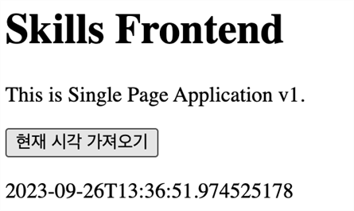
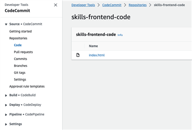
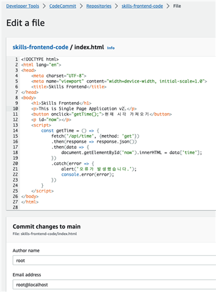
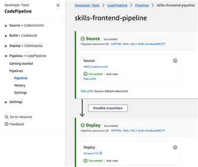
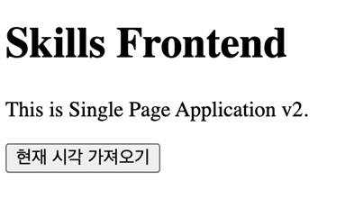
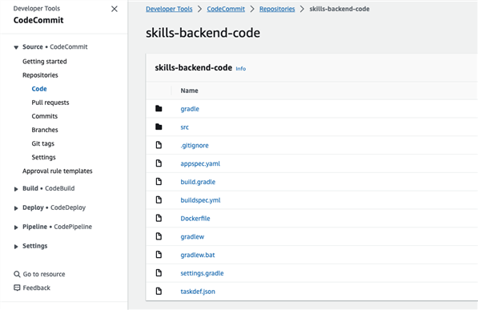
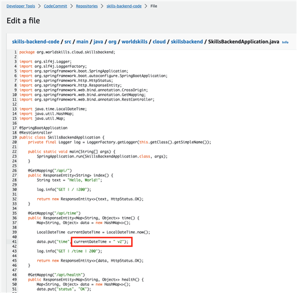
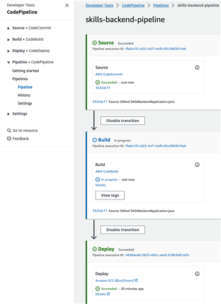

채점 유의사항
주의※ 다음 사항을 유의하여 채점하시오.
- AWS의 리전은 ap-northeast-2을 사용합니다.
- 웹페이지 접근은 크롬이나 파이어폭스를 이용합니다.
- 웹페이지에서 언어에 따라 문구가 다르게 보일 수 있습니다.
- Shell에서의 명령어의 출력은 버전에 따라 조금 다를 수 있습니다.
- 문제지와 채점지에 있는 <> 는 변수입니다. 해당 부분을 변경해 입력합니다.
- 채점은 문항 순서대로 진행해야 합니다.
- 삭제 채점은 되돌릴 수 없으므로 유의하여 진행합니다.
- 이의신청까지 완료 이후 선수가 생성한 클라우드 리소스를 삭제합니다.
- 부분 점수가 있는 문항은 채점 항목에 부분 점수가 적혀져 있습니다.
- 부분 점수가 따로 없는 문항은 전체 다 맞아야 점수로 인정됩니다.
- 채점 진행 전 환경 셋업을 위해 다음 사항을 확인해야 합니다.
- Bastion에 SSH로 접근할 수 있는지 확인합니다.
- Bastion에서 AWS CLI v2, cURL, jq가 설치되어 있는지 확인합니다.
- Bastion에서 IAM Role이 매핑되어 AWS CLI로 AWS의 모든 리소스에 접근 가능한지 확인합니다.
- aws sts get-caller-identity 명령을 통해 선수의 계정이 아닌 다른 계정에 접근하고 있는지 확인합니다. 만약, 다른 계정이라면 부정행위를 의심할 수 있습니다.
- 채점 전 채점환경 구성을 위해 ~/.aws/config 에 아래 내용이 추가되도록 합니다.
[default] region = ap-northeast-2 output = json - 채점 시에는 별도로 제공한 채점 스크립트(mark.sh)를 실행하여 채점할 수 있습니다. 다만, 선수가 직접 입력을 원할 경우 채점기준표에 명시된 명령어 그대로 입력하여 채점할 수 있습니다.
배점 요약
주요항목별 배점
| 번호 | 주요항목 | 배점 | 채점방법 | 채점시기 |
|---|---|---|---|---|
| 1 | Networking | 4.0 | 합의 | 경기 종료후 |
| 2 | Bastion Server | 4.5 | 합의 | 경기 종료후 |
| 3 | Version Control | 6.0 | 합의 | 경기 종료후 |
| 4 | Continuous Integration | 3.0 | 합의 | 경기 종료후 |
| 5 | Continuous Delivery | 3.0 | 합의 | 경기 종료후 |
| 6 | Content Delivery Network | 7.5 | 합의 | 경기 종료후 |
| 7 | CI/CD Pipeline | 3.0 | 합의 | 경기 종료후 |
| 8 | Application Load Balancer | 3.0 | 합의 | 경기 종료후 |
| 9 | Application | 6.0 | 합의 | 경기 종료후 |
| 합계 | 40 |
세부항목별 배점
| 번호 | 항목 | 배점 |
|---|---|---|
| 1-1 | Networking — VPC 확인 | 1.0 |
| 1-2 | Networking — Subnets 확인 | 1.5 |
| 1-3 | Networking — Route Tables 확인 | 1.5 |
| 2-1 | Bastion Server — 인스턴스 타입 확인 | 1.5 |
| 2-2 | Bastion Server — Public IP 확인 | 1.5 |
| 2-3 | Bastion Server — OS 확인 | 1.5 |
| 3-1 | Version Control — Front-End CodeCommit 구성 | 1.5 |
| 3-2 | Version Control — Back-End CodeCommit 구성 | 1.5 |
| 3-3 | Version Control — Front-End Branch 구성 | 1.5 |
| 3-4 | Version Control — Back-End Branch 구성 | 1.5 |
| 4-1 | Continuous Integration — Back-End CodeBuild 구성 | 1.5 |
| 4-2 | Continuous Integration — Back-End CodeBuild 로깅 구성 | 1.5 |
| 5-1 | Continuous Delivery — Back-End CodeDeploy 구성 | 1.5 |
| 5-2 | Continuous Delivery — Back-End CodeDeploy ECS 구성 | 1.5 |
| 6-1 | Content Delivery Network — S3 구성 | 1.5 |
| 6-2 | Content Delivery Network — CloudFront 구성 | 1.5 |
| 6-3 | Content Delivery Network — CloudFront Origin 구성 | 1.5 |
| 6-4 | Content Delivery Network — CloudFront Edge 구성 | 1.5 |
| 6-5 | Content Delivery Network — CloudFront Cache 구성 | 1.5 |
| 7-1 | CI/CD Pipeline — Front-End CodePipeline 구성 | 1.5 |
| 7-2 | CI/CD Pipeline — Back-End CodePipeline 구성 | 1.5 |
| 8-1 | Application Load Balancer — ALB 생성 확인 | 1.5 |
| 8-2 | Application Load Balancer — ALB Scheme 확인 | 1.5 |
| 9-1 | Application — Front-End 동작 테스트 | 1.5 |
| 9-2 | Application — Back-End 동작 테스트 | 1.5 |
| 9-3 | Application — Front-End 배포 테스트 | 1.5 |
| 9-4 | Application — Back-End 배포 테스트 | 1.5 |
| 총점 | 40 |
채점 항목
1-1. VPC 확인 · 1.0점
채점 방법
- SSH를 통해 Bastion 서버에 접근합니다.
- 아래 명령어를 입력합니다.
aws ec2 describe-vpcs --filter Name=tag:Name,Values=skills-vpc \ --query "Vpcs[].CidrBlock" - 172.16.0.0/16이 출력되는지 확인합니다.
1-2. Subnets 확인 · 1.5점
채점 방법
- SSH를 통해 Bastion 서버에 접근합니다.
- 아래 명령어를 입력합니다.
aws ec2 describe-subnets --filter Name=tag:Name,Values=skills-public-subnet-a \ --query "Subnets[].[AvailabilityZone, CidrBlock][]" - ap-northeast-2a와 172.16.1.0/24가 출력되는지 확인합니다.
- 아래 명령어를 입력합니다.
aws ec2 describe-subnets --filter Name=tag:Name,Values=skills-public-subnet-b \ --query "Subnets[].[AvailabilityZone, CidrBlock][]" - ap-northeast-2b와 172.16.2.0/24가 출력되는지 확인합니다.
- 아래 명령어를 입력합니다.
aws ec2 describe-subnets --filter Name=tag:Name,Values=skills-private-subnet-a \ --query "Subnets[].[AvailabilityZone, CidrBlock][]" - ap-northeast-2a와 172.16.11.0/24가 출력되는지 확인합니다.
- 아래 명령어를 입력합니다.
aws ec2 describe-subnets --filter Name=tag:Name,Values=skills-private-subnet-b \ --query "Subnets[].[AvailabilityZone, CidrBlock][]" - ap-northeast-2b와 172.16.12.0/24가 출력되는지 확인합니다.
1-3. Route Tables 확인 · 1.5점
채점 방법
- SSH를 통해 Bastion 서버에 접근합니다.
- 아래 명령어를 입력합니다.
aws ec2 describe-route-tables --filter Name=tag:Name,Values=skills-public-rtb \ --query "RouteTables[].Routes[].GatewayId" - igw- 로 시작하는 문구가 출력되는지 확인합니다.
- 아래 명령어를 입력합니다.
aws ec2 describe-internet-gateways --filter Name=tag:Name,Values=skills-igw \ --query "InternetGateways[].InternetGatewayId" - igw- 로 시작하는 문구가 2)에서 출력된 문구와 동일한지 확인합니다.
- 아래 명령어를 입력합니다.
aws ec2 describe-route-tables --filter Name=tag:Name,Values=skills-private-rtb-a \ --query "RouteTables[].Routes[].NatGatewayId" - nat- 로 시작하는 문구가 출력되는지 확인합니다.
- 아래 명령어를 입력합니다.
aws ec2 describe-nat-gateways --filter Name=tag:Name,Values=skills-nat-a \ --query "NatGateways[].NatGatewayId" - nat- 로 시작하는 문구가 6)에서 출력된 문구와 동일한지 확인합니다.
- 아래 명령어를 입력합니다.
aws ec2 describe-route-tables --filter Name=tag:Name,Values=skills-private-rtb-b \ --query "RouteTables[].Routes[].NatGatewayId" - nat- 로 시작하는 문구가 출력되는지 확인합니다.
- 아래 명령어를 입력합니다.
aws ec2 describe-nat-gateways --filter Name=tag:Name,Values=skills-nat-b \ --query "NatGateways[].NatGatewayId" - nat- 로 시작하는 문구가 10)에서 출력된 문구와 동일한지 확인합니다.
2-1. 인스턴스 타입 확인 · 1.5점
채점 방법
- SSH를 통해 Bastion 서버에 접근합니다.
- 아래 명령어를 입력합니다.
aws ec2 describe-instances --filter Name=tag:Name,Values=skills-bastion-ec2 \ --query "Reservations[].Instances[].InstanceType" - t3a.small이 출력되는지 확인합니다.
2-2. Public IP 확인 · 1.5점
채점 방법
- SSH를 통해 Bastion 서버에 접근합니다.
- 아래 명령어를 입력합니다.
aws ec2 describe-instances --filter Name=tag:Name,Values=skills-bastion-ec2 \ --query "Reservations[].Instances[].PublicIpAddress" - 2)에서 출력된 IP를 기록합니다.
- 아래 명령어를 입력합니다.
aws ec2 describe-addresses --query "Addresses[].PublicIp" - 출력되는 IP 리스트 중에 3)에서 기록한 IP가 존재하는지 확인합니다.
2-3. OS 확인 · 1.5점
채점 방법
- SSH를 통해 Bastion 서버에 접근합니다.
- 아래 명령어를 입력합니다.
aws ec2 describe-instances --filter Name=tag:Name,Values=skills-bastion-ec2 \ --query "Reservations[].Instances[].ImageId" - ami-로 시작하는 AMI ID를 기록합니다.
- 아래 명령어를 입력합니다.
aws ec2 describe-images --image-ids <2)에서 기록한 AMI ID> --query "Images[].Description" - Amazon Linux 2023이 포함된 문구가 출력되는지 확인합니다.
3-1. Front-End CodeCommit 구성 · 1.5점
채점 방법
- SSH를 통해 Bastion 서버에 접근합니다.
- 아래 명령어를 입력합니다.
aws codecommit get-repository --repository-name skills-frontend-code \ --query "repositoryMetadata.repositoryName" - skills-frontend-code가 출력되는지 확인합니다.
3-2. Back-End CodeCommit 구성 · 1.5점
채점 방법
- SSH를 통해 Bastion 서버에 접근합니다.
- 아래 명령어를 입력합니다.
aws codecommit get-repository --repository-name skills-backend-code \ --query "repositoryMetadata.repositoryName" - skills-backend-code가 출력되는지 확인합니다.
3-3. Front-End Branch 구성 · 1.5점
채점 방법
- SSH를 통해 Bastion 서버에 접근합니다.
- 아래 명령어를 입력합니다.
aws codecommit get-repository --repository-name skills-frontend-code \ --query "repositoryMetadata.defaultBranch" - main이 출력되는지 확인합니다.
3-4. Back-End Branch 구성 · 1.5점
채점 방법
- SSH를 통해 Bastion 서버에 접근합니다.
- 아래 명령어를 입력합니다.
aws codecommit get-repository --repository-name skills-backend-code \ --query "repositoryMetadata.defaultBranch" - main이 출력되는지 확인합니다.
4-1. Back-End CodeBuild 구성 · 1.5점
채점 방법
- SSH를 통해 Bastion 서버에 접근합니다.
- 아래 명령어를 입력합니다.
aws codebuild batch-get-projects --names skills-backend-build --query "projects[*].name" - skills-backend-build가 출력되는지 확인합니다.
4-2. Back-End CodeBuild 로깅 구성 · 1.5점
채점 방법
- SSH를 통해 Bastion 서버에 접근합니다.
- 아래 명령어를 입력합니다.
aws codebuild batch-get-projects --names skills-backend-build \ --query "projects[*].logsConfig.cloudWatchLogs.status" - ENABLED가 출력되는지 확인합니다.
5-1. Back-End CodeDeploy 구성 · 1.5점
채점 방법
- SSH를 통해 Bastion 서버에 접근합니다.
- 아래 명령어를 입력합니다.
aws deploy get-application --application-name skills-backend-app \ --query "application.applicationName" - skills-backend-app이 출력되는지 확인합니다.
5-2. Back-End CodeDeploy ECS 구성 · 1.5점
채점 방법
- SSH를 통해 Bastion 서버에 접근합니다.
- 아래 명령어를 입력합니다.
aws deploy get-deployment-group --application-name skills-backend-app \ --deployment-group-name skills-backend-dg --query "deploymentGroupInfo.ecsServices[0]" {"serviceName": "backend","clusterName": "skills-ecs-cluster"}가 출력되는지 확인합니다.
6-1. S3 구성 · 1.5점
채점 방법
- SSH를 통해 Bastion 서버에 접근합니다.
- 아래 명령어를 입력합니다.
aws s3api list-buckets --query "Buckets[*].Name" | grep "skills-frontend-" - skills-frontend-<랜덤 문자 4자리>가 출력되는지 확인합니다.
6-2. CloudFront 구성 · 1.5점
채점 방법
- SSH를 통해 Bastion 서버에 접근합니다.
- 아래 명령어를 입력합니다.
aws resourcegroupstaggingapi get-resources \ --tag-filters Key=Name,Values=skills-frontend-cdn \ --resource-type-filters 'cloudfront' --region us-east-1 \ --query "ResourceTagMappingList[0].ResourceARN" \ --output text | sed 's:.*/::' | xargs -I {} aws cloudfront get-distribution --id {} \ --query "Distribution.DomainName" - XXXXXXXXXXXXX.cloudfront.net이라는 도메인이 출력되는지 확인합니다.
6-3. CloudFront Origin 구성 · 1.5점
채점 방법
- SSH를 통해 Bastion 서버에 접근합니다.
- 아래 명령어를 입력합니다.
aws resourcegroupstaggingapi get-resources \ --tag-filters Key=Name,Values=skills-frontend-cdn \ --resource-type-filters 'cloudfront' --region us-east-1 \ --query "ResourceTagMappingList[0].ResourceARN" \ --output text | sed 's:.*/::' | xargs -I {} aws cloudfront get-distribution --id {} \ --query "Distribution.DistributionConfig.Origins.Items[*].DomainName" \ | grep "skills-frontend-" - skills-frontend-<랜덤 문자 4자리>.s3.ap-northeast-2.amazonaws.com이라는 문구가 출력되는지 확인합니다.
6-4. CloudFront Edge 구성 · 1.5점
채점 방법
- SSH를 통해 Bastion 서버에 접근합니다.
- 아래 명령어를 입력합니다.
aws resourcegroupstaggingapi get-resources \ --tag-filters Key=Name,Values=skills-frontend-cdn \ --resource-type-filters 'cloudfront' --region us-east-1 \ --query "ResourceTagMappingList[0].ResourceARN" \ --output text | sed 's:.*/::' | xargs -I {} aws cloudfront get-distribution --id {} \ --query "Distribution.DistributionConfig.PriceClass" - PriceClass_All이라는 도메인이 출력되는지 확인합니다.
6-5. CloudFront Cache 구성 · 1.5점
채점 방법
- SSH를 통해 Bastion 서버에 접근합니다.
- 아래 명령어를 입력합니다.
aws resourcegroupstaggingapi get-resources \ --tag-filters Key=Name,Values=skills-frontend-cdn \ --resource-type-filters 'cloudfront' --region us-east-1 \ --query "ResourceTagMappingList[0].ResourceARN" \ --output text | sed 's:.*/::' | xargs -I {} aws cloudfront get-distribution --id {} \ --query "Distribution.DomainName" - XXXXXXXXXXXXX.cloudfront.net이라는 도메인이 출력되는지 확인합니다.
- 아래 명령어를 입력합니다.
curl --silent --head https://<3)에서 출력된 도메인>/index.html | grep "x-cache“ - x-cache: Hit from cloudfront이라는 문구가 출력되는지 확인합니다. 최대 5번까지 실행해볼 수 있습니다.
7-1. Front-End CodePipeline 구성 · 1.5점
채점 방법
- SSH를 통해 Bastion 서버에 접근합니다.
- 아래 명령어를 입력합니다.
aws codepipeline get-pipeline --name skills-frontend-pipeline \ --query "pipeline.stages[*].[name, actions[*].actionTypeId.provider]" - Source, Deploy가 출력되고, 각각 CodeCommit, S3가 출력되는지 확인합니다. 3개를 제외한 다른 것들도 출력되도 무관하나, 3개는 반드시 출력되어야 합니다.
7-2. Back-End CodePipeline 구성 · 1.5점
채점 방법
- SSH를 통해 Bastion 서버에 접근합니다.
- 아래 명령어를 입력합니다.
aws codepipeline get-pipeline --name skills-backend-pipeline \ --query "pipeline.stages[*].[name, actions[*].actionTypeId.provider]" - Source, Build, Deploy가 출력되고, 각각 CodeCommit, CodeBuild, CodeDeployToECS가 출력되는지 확인합니다. 3개를 제외한 다른 것들은 출력되어서는 안됩니다.
8-1. ALB 생성 확인 · 1.5점
채점 방법
- SSH를 통해 Bastion 서버에 접근합니다.
- 아래 명령어를 입력합니다.
aws elbv2 describe-load-balancers --names skills-user-alb \ --query "LoadBalancers[].LoadBalancerName" - skills-user-alb가 출력되는지 확인합니다.
8-2. ALB Scheme 확인 · 1.5점
채점 방법
- SSH를 통해 Bastion 서버에 접근합니다.
- 아래 명령어를 입력합니다.
aws elbv2 describe-load-balancers --names skills-user-alb \ --query "LoadBalancers[].Scheme" - internet-facing이 출력되는지 확인합니다.
9-1. Front-End 동작 테스트 · 1.5점
채점 방법
-
SSH를 통해 Bastion 서버에 접근합니다.
-
아래 명령어를 입력합니다.
aws resourcegroupstaggingapi get-resources \ --tag-filters Key=Name,Values=skills-frontend-cdn \ --resource-type-filters 'cloudfront' --region us-east-1 \ --query "ResourceTagMappingList[0].ResourceARN" \ --output text | sed 's:.*/::' | xargs -I {} aws cloudfront get-distribution --id {} \ --query "Distribution.DomainName" -
XXXXXXXXXXXXX.cloudfront.net이라는 도메인이 출력되는지 확인합니다.
-
https://<3)에서 출력된 도메인>/index.html을 웹브라우저를 통해 접속합니다.

Front-End 화면 예시 (Single Page Application v1) -
웹브라우저에서 위와 같은 화면이 출력되는지 확인합니다.
9-2. Back-End 동작 테스트 · 1.5점
채점 방법
-
SSH를 통해 Bastion 서버에 접근합니다.
-
아래 명령어를 입력합니다.
aws resourcegroupstaggingapi get-resources \ --tag-filters Key=Name,Values=skills-frontend-cdn \ --resource-type-filters 'cloudfront' --region us-east-1 \ --query "ResourceTagMappingList[0].ResourceARN" \ --output text | sed 's:.*/::' | xargs -I {} aws cloudfront get-distribution --id {} \ --query "Distribution.DomainName" -
XXXXXXXXXXXXX.cloudfront.net이라는 도메인이 출력되는지 확인합니다.
-
https://<3)에서 출력된 도메인>/을 웹브라우저를 통해 접속합니다.

Front-End 화면 예시 (v1) -
웹브라우저에서 위와 같은 화면이 출력되면, ‘현재 시각 가져오기’를 클릭합니다.

현재 시각이 하단에 출력된 화면 예시 -
위와 같이 오류 없이 하단에 현재 시각이 출력되는지 확인합니다.
9-3. Front-End 배포 테스트 · 1.5점
채점 방법

-
위와 같이 웹브라우저를 통해 AWS Console로 접속한 후, CodeCommit의 skills-frontend-code 리포지토리로 접근합니다.

index.html 편집 화면 (v2로 변경 후 커밋) -
index.html에서 Edit을 클릭한 후, v1을 v2라는 문구로 변경합니다. Author name은 root, Email address는 root@localhost를 입력한 후, 하단의 Commit changes를 클릭해 커밋을 실행합니다.

skills-frontend-pipeline 동작 중 화면 -
CodePipeline의 skills-frontend-pipeline으로 접근합니다. 방금 새로운 커밋을 실행하엿으므로 위와 같이 파이프라인이 동작중이여야 합니다. 파이프라인이 실패 없이 15분만에 완료되는지 확인합니다. 파이프라인이 완료되면 채점을 재개합니다.
-
SSH를 통해 Bastion 서버에 접근합니다.
-
아래 명령어를 입력합니다.
aws resourcegroupstaggingapi get-resources \ --tag-filters Key=Name,Values=skills-frontend-cdn \ --resource-type-filters 'cloudfront' --region us-east-1 \ --query "ResourceTagMappingList[0].ResourceARN" \ --output text | sed 's:.*/::' | xargs -I {} aws cloudfront get-distribution --id {} \ --query "Distribution.DomainName" -
XXXXXXXXXXXXX.cloudfront.net이라는 도메인이 출력되는지 확인합니다.
-
https://<3)에서 출력된 도메인>/index.html을 웹브라우저를 통해 접속합니다.

Front-End 화면 예시 (v2) -
웹브라우저에서 위와 같이 v2가 출력되는지 확인합니다.
9-4. Back-End 배포 테스트 · 1.5점
채점 방법

-
위와 같이 웹브라우저를 통해 AWS Console로 접속한 후, CodeCommit의 skills-backend-code 리포지토리로 접근합니다.

SkillsBackendApplication.java 편집 화면 (currentDateTime 뒤에 v2 추가) -
src/main/java/org/worldskills/cloud/skillsbackend/SkillsBackendApplication.java에서 Edit을 클릭한 후, currentDateTime 뒤에 v2라는 문구를 입력합니다. Author name은 root, Email address는 root@localhost를 입력한 후, 하단의 Commit changes를 클릭해 커밋을 실행합니다.

skills-backend-pipeline 동작 중 화면 -
CodePipeline의 skills-backend-pipeline으로 접근합니다. 방금 새로운 커밋을 실행하엿으므로 위와 같이 파이프라인이 동작중이여야 합니다. 파이프라인이 실패 없이 15분만에 완료되는지 확인합니다. 파이프라인이 완료되면 채점을 재개합니다.
-
SSH를 통해 Bastion 서버에 접근합니다.
-
아래 명령어를 입력합니다.
aws resourcegroupstaggingapi get-resources \ --tag-filters Key=Name,Values=skills-frontend-cdn \ --resource-type-filters 'cloudfront' --region us-east-1 \ --query "ResourceTagMappingList[0].ResourceARN" \ --output text | sed 's:.*/::' | xargs -I {} aws cloudfront get-distribution --id {} \ --query "Distribution.DomainName" -
XXXXXXXXXXXXX.cloudfront.net이라는 도메인이 출력되는지 확인합니다.
-
https://<3)에서 출력된 도메인>/index.html을 웹브라우저를 통해 접속합니다.

Front-End 화면 예시 -
웹브라우저에서 위와 같은 화면이 출력되면, ‘현재 시각 가져오기’를 클릭합니다.

현재 시각이 v2와 함께 출력된 화면 예시 -
위와 같이 오류 없이 하단에 현재 시각이 v2와 함께 출력되는지 확인합니다.